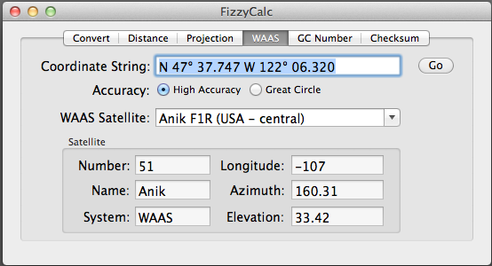
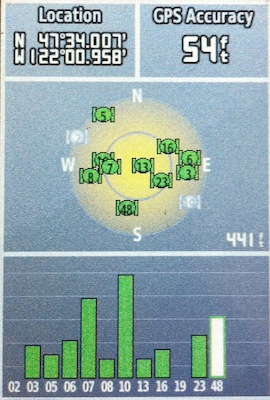

The Wide Area Augmentation System (WAAS, US), EGNOS (Europe), and MTSTAT (Japan) are satellite-based differential GPS systems that provide a correction to GPS data. These systems rely on stations at well-known locations. A GPS correction (for the orbit, clock drift, signal delays, etc)[4] can be broadcast through the geostationary satellites. Certain GPS units can use this additional information to improve position accuracy to better than three meters 95% of the time.
For the purposes of FizzyCalc, the calculation lets you explore which satellites, if any, might be received. For example, using my home position, it appears that Intelsat's Galaxy 15 is the closest:

Indeed, when I enable WAAS/EGNOS mode on my Garmin, I see Satellite 48 pop up.

The satellite position information is taken from multiple sources[1],[2],[4], and is believed to be correct as of 6 August 2011.
Sources:
[1] WAAS and its relation to hand-held GPS receivers, GPSInformation.net
[2] WAAS, EGNOS and MTSTAT background, kowoma.de
[3] Garmin's web site.
[4] Dale DePriest.
[5] Real-time map of sattelites.